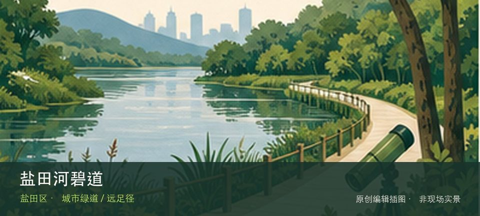

适合谁
适合观鸟、自然教育和安静慢行；不适合携宠、投喂或为拍照进入保育区域。

SHENZHEN GUIDE · 123
固戍 · 滨海湿地
西湾红树林公园位于固戍西部海岸，潮滩、红树林、跨海桥和机场航线叠成独特景观，飞机并非唯一看点，候鸟与海岸生态更需要克制观察。先辨认红树林潮滩，再观察候鸟与海湾生境，两者共同说明这里为何不能被同类地点的泛化标签替代。观察重点是红树林潮滩与候鸟与海湾生境之间的生境关系，而不是追逐动物或进入滩涂取景。保持距离、不投喂，并把水位、蚊虫、暴晒和雷雨作为当天是否停留的判断条件。
WHY GO
适合观鸟、自然教育和安静慢行；不适合携宠、投喂或为拍照进入保育区域。
首次游览西湾红树林公园不求走全，先完成红树林潮滩这一项观察，再根据同行者体力选择候鸟与海湾生境，并保留原路退出方案。
公共交通先到固戍西部海岸片区，再以西湾红树林公园公开参观入口为终点；多入口地点须按计划游线选择入口，并预先锁定返程站点。
沿海停车容量有限，节假日优先公共交通；自驾只进官方或周边正规停车区，不在沿江道路停靠拍飞机。
11 月至次年 3 月通常更适合观鸟；春夏注意蚊虫、暴晒、雷雨与水位变化，不进入生态保育区域。
NEARBY IDEAS
 编辑配图·非现场实景
编辑配图·非现场实景
旭生美术馆位于西乡共和工业路西发B区的研发大厦内，官方美术馆名录将其列为宝安区独立艺术空间。
 授权实景图
授权实景图
铁仔山公园位于西乡立交西北侧，约145公顷山体把登高视野与古墓群等历史线索叠合，适合短线爬升和城市考古观察。
 编辑配图·非现场实景
编辑配图·非现场实景
深圳市当代名家文房四宝博物馆位于西乡，笔、墨、纸、砚的材料与制作工艺构成完整书写系统，名家作品只是理解工具如何影响表达的延伸。